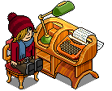

KeepAnOpenMind is a brand new openHabbo Fansite, therefore we decided to put up some frquesntly asked questions for anyone who doesn't understand who we are or what our aims are in the openHabbo community.
This page will contain a number of questions that get asked on a regular bases, it is best to keep checking on this page because we will be making regular amendements with the more contact forms we receive asking the same questions!